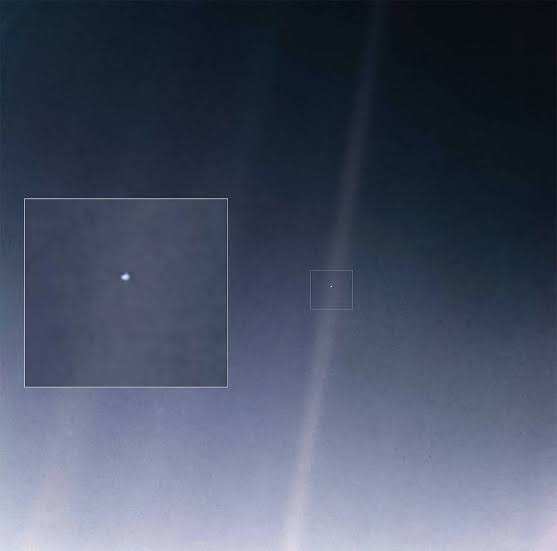

Wonders
Voyager-1

Voyager 1's last photo is the iconic "Pale Blue Dot," taken on February 14, 1990, from a distance of about 6 billion kilometers (3.7 billion miles) away from Earth.
- Date Taken: February 14, 1990 (with the Earth image captured at 04:48 GMT).
- The "Family Portrait": The Pale Blue Dot was part of a 60-frame mosaic creating the first-ever "family portrait" of the solar system viewed from the outside, which also included images of Jupiter, Saturn, Uranus, Neptune, Venus, and the Sun (Mars was missed due to camera glare)
Black hole
.jpg)
The first-ever direct image of a black hole was unveiled on April 10, 2019, capturing the supermassive black hole at the center of the giant elliptical galaxy Messier 87 (M87).
- Imaging Technology: Captured by the Event Horizon Telescope (EHT), a planet-scale network of eight synchronized ground-based radio observatories acting as a single virtual Earth-sized telescope.
- Target: The supermassive black hole located in the core of the M87 galaxy
- Distance & Mass: It sits roughly 55 million light-years away from Earth and possesses a mass of about 6.5 billion times that of our Sun.
Andromeda galaxy
.jpg)
The Andromeda Galaxy (Messier 31, M31) is a barred spiral galaxy and the nearest major galaxy to the Milky Way, located approximately 2.5 million light-years away from Earth.
- Diameter & Size: Roughly 220,000 light-years across—more than double the size of the Milky Way.
- Star Count: Estimated to contain roughly 1 trillion stars (compared to 200–400 billion in the Milky Way).